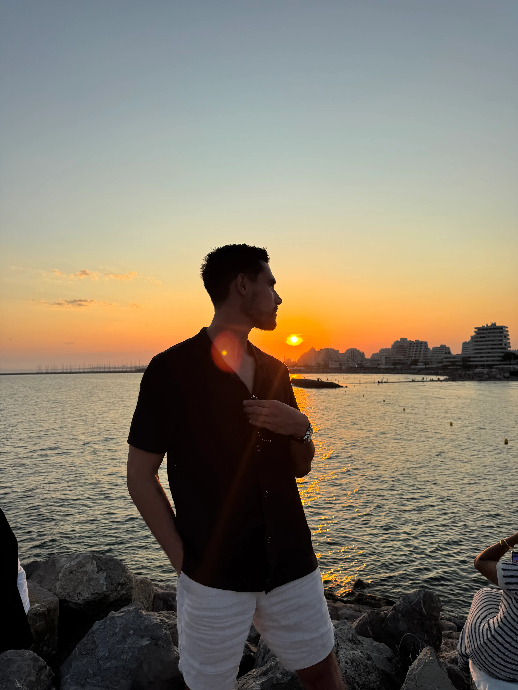

Bienvenue sur mon portfolio. Je vous invite à découvrir mon parcours, mes projets, mes compétences, ainsi qu’à me contacter si vous souhaitez échanger davantage.
Je suis titulaire de deux diplômes Bac+3 : un Bac+3 en Marketing Digital & Social Media et un Bac+3 en Pilotage du Développement Commercial. Au cours de mes années d’alternance, j’ai acquis des compétences en développement web et en programmation, ce qui m’a permis d’aborder le digital sous un angle à la fois technique et stratégique. Après mes études, j’ai choisi de me tourner vers le secteur automobile en travaillant pendant un an et demi comme commercial B2C chez Peugeot. Souhaitant découvrir de nouveaux environnements professionnels, j’ai ensuite occupé le poste d’assistant administratif et commercial polyvalent au sein de l’Auto-École de la Comédie. Mais ma passion pour la tech, la programmation et la création de solutions numériques m’a rapidement rattrapé. Je souhaite donc reprendre mes études afin de valider un Master en Développement de Solutions Logiciels. Passionné par les nouvelles technologies, l’innovation et la conception d’outils adaptés aux besoins des utilisateurs, je suis aujourd’hui motivé par l’idée de combiner mes compétences techniques, mon sens du commerce et ma vision digitale. Polyvalent, curieux et rigoureux, j’aime apprendre, résoudre des problématiques concrètes et participer à des projets ambitieux qui ont un véritable impact.
